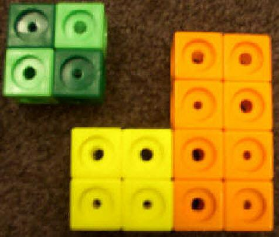
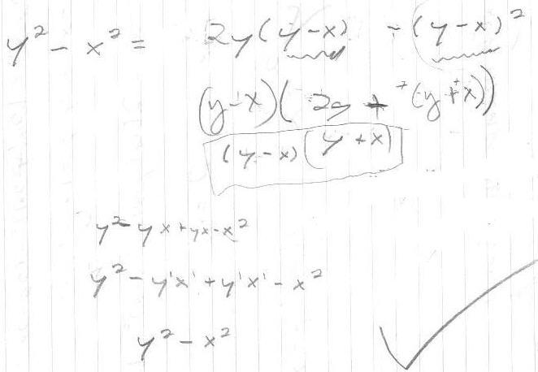
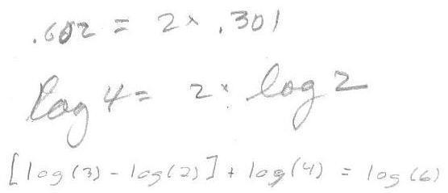

Noah looks at things differently

Don gave Noah the problem of finding another name for y2 - x2 . Using the figure above, he came up with the following:

Don factored his expression and Noah showed it was equal to (y - x)(y + x). He then multiplied this to check that it was equal to what he started with.
Another example of Noah's thinking was finding patterns in logs. He saw that log 4 = 2 * Log 2. Then Don suggested he look for other patterns. He came up with the one below!

Don checked that and it was true. How he came up with that Don didn't know. Can he come up with another one like this? Can he generalize this? Tune in for another day.